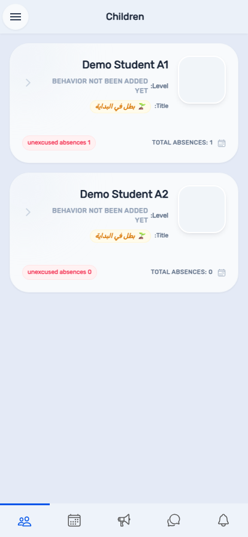

Basma App Platform
Basma App is the mobile companion to BasmaCP Admin. Everything a school sets up in the admin panel — rosters, timetables, exams, behavior records — becomes something a teacher, moderator, parent, or student can see and act on from their phone. The app adapts its entire menu to whoever is signed in: a parent never sees a teacher's attendance tools, and a student never sees an admin's roster screens.
Enter your username and password on the sign-in screen and select Sign in. The app remembers accounts you have signed into before, offering a quick-switch row above the sign-in form the next time you open it.

Open the side menu (the icon in the top corner of any screen) and use the Language selector near the top. The entire app — including layout direction — switches immediately; Arabic renders right-to-left, English left-to-right.

The rest of this manual is organized by role, since that is how the app itself is organized — open the chapter matching your own role (Teacher, Moderator, School Admin, Parent, or Student) rather than reading front to back.
The home screen for a teacher lists every class you are assigned to. Select a class to open its roster.

Opening a class shows its student roster for the current period, with a mark-present or mark-absent control beside each student. Two quick-action buttons let you mark the whole class present or absent in one tap before making individual corrections, and a running tally at the bottom shows how many students are recorded so far. Select Save once attendance is complete.

Select a student's name from the roster (not their photo, which opens a larger avatar view instead) to open their full profile — behavior level, title, and attendance history.

Your own full weekly timetable across every class you teach, grouped by day.

When your school marks you absent, or asks you to cover for someone else, requests appear here needing your response.

A read-only roster of the exam sessions you have been assigned to proctor — date, subject, class, period, and room. Unlike coverage requests, invigilation duties do not need an accept or decline; they are a fixed assignment.

Your school's announcements, your personal notification feed, and any circulated bulletins all have their own tab or menu entry.


Browse the video and document materials your school has published, organized by category.

A running list of the periodic follow-up marks you have entered for your students against your school's custom follow-up fields (for example homework completion or participation), plus a per-class summary view for reviewing marks across an entire section at once.


Manage your profile, notification preferences, and the list of devices signed into your account from the side menu's Settings and Devices entries. The same menu also has quick links to the About Us and Contact Us pages if you need to reach Basma support.

Moderators see a supervisory view across classes rather than owning a single roster — you can review attendance, behavior, and warnings for any class you are assigned to oversee.

Students marked late at the morning line, across every class you supervise.


A cross-class view of every student marked absent today.

A school admin's mobile menu mirrors a handful of the most time-sensitive tools from BasmaCP Admin (Chapter 3 of that manual), for managing your roster while away from a desk.


The home screen for a parent lists every child linked to your account, with their current behavior level, title, and absence counts at a glance.

Select a child's card to open their full profile.

If you have more than one child, a picker lets you choose which child's schedule to view; with a single child it opens directly.

A direct messaging channel with your child's school.


Review or activate extra features for your school, or redeem a voucher code your school has issued.



The gamified titles and streaks you have earned through the points system.


Your own running absence tally against your school's warning thresholds.


Double-check your username and password are typed exactly as issued. If you still can't sign in, contact your school's admin office — the app does not offer a self-service password reset.
You have not yet been assigned to a class roster. Contact your school's admin office to confirm your class assignment.
Contact your school's admin office — they can reassign the period from BasmaCP Admin's Substitutes screen.
It lives inside the side menu (the icon in the top corner of most screens), not on the sign-in page itself — sign in first, then switch.
Child-parent links are managed from BasmaCP Admin, not from the app itself — ask your school's admin office to confirm the link is set up correctly.
| Term | Meaning |
|---|---|
| Class list | A teacher or moderator's home screen, listing the classes they are assigned to. |
| Coverage request | A substitute-teaching assignment a teacher must accept or decline. |
| Invigilation duty | A fixed exam-proctoring assignment; unlike a coverage request, it needs no response. |
| Parent Connect | The in-app messaging channel between a parent and school staff. |
| Moderator | Supervisory staff who oversee multiple classes without being any one class's own subject teacher. |